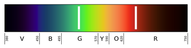
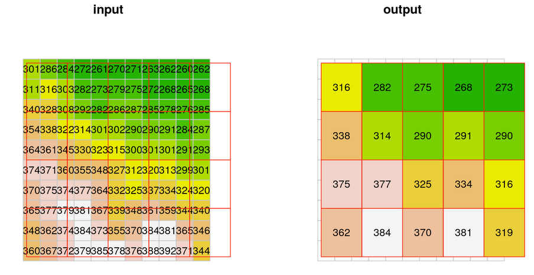

Remote sensing
Remote sensing - Obtaining information about an object from a distance.
What is the most basic form of remote sensing you can think of?
Looking at something!
There are many different methods of remote sensing.
- Some ground based
- Some airborne
- Some satellite based
- Most remote sensing relies on electromagnetic radiation
Red band (0.63 - 0.69 µm)
Useful for:
- Detecting bare soil, buildings, pavement
- Chlorophyll absorption
Green band (0.52 - 0.6 µm)
Useful for:
- phenology / vegetation dynamics
- plant Health
- algal Blooms
Blue band (0.45 - 0.52 µm)
Useful for:
- water
- clouds
- snow
- aerosols
NIR band (0.77 - 0.9 µm)
Useful for:
- biomass
- vegetation detection
- boundary detection
A “True Color” image used Red, Green and Blue
- Pixels in display contain 3 sub-pixels
- Each sub-pixels intensity is controlled by the intensity value in the image
- Intensity values are stored as 8-bit unsigned integers (
uint8)- 8 bits = \(2^{8}\) = 256 possible values
- Range: 0 to 255 (256 values total)
- Images are sometimes stored with higher precision, but displayed with 8 bits
(255, 0, 0) = pure red
(0, 255, 0) = pure green
(0, 0, 255) = pure blue
(255, 255, 0) = yellow (red + green)
(0, 255, 255) = cyan (green + blue)
(255, 0, 255) = magenta (red + blue)
(255, 255, 255) = white (all combined)
(0, 0, 0) = black (none)Combining bands on different ways is often useful.

For example, False Color Image
- NIR, G, R
- Humans see only a small portion of the EM spectrum.
- Instruments on satellites capture more, but still only a small portion of the entire electromagnetic spectrum
Right: Reflectance of water, soil and vegetation in different wavelengths and Landsat TM channels.

{kind=link}
A Digression - Visualizing Elevation
DEMs are fundamental to many types of analysis, but not great to look at.
Slope Maps are a little better.
- Raster → Analysis → Slope…

Hillshade maps are much better
- Raster → Analysis → Hillshade…

Better yet, Red Relief!
- See next slide

A Digression Continued

A Digression Continued - Landforms

Raster Resampling - Methods
Nearest Neighbor Resampling
- The new raster pixels get the value from nearest pixel of the original raster to the center of the new pixel.
- Note that some of the values are lost this way (particularly in downsampling), since they were not passed on to the new raster

bilinear resampling
- Each new raster cell gets a weighted average of four nearest cells from the input, rather than just one
- Less loss of information

Average resampling
- Each new cell gets the (non-weighted) average of all overlapping input cells
Raster Resampling
There are two\(^*\) tools for resampling in QGIS

* Actually there are others, notably if Grass is installed its tools are also available.
| Feature | QGIS Align Rasters | GDAL Warp |
|---|---|---|
| Align to grid | ✅ Yes (to reference) | ✅ Yes (to round coords) |
| Resample | ✅ Yes | ✅ Yes |
| Match resolution | ✅ Yes | ⚠️ Only if specified |
| Match extent | ✅ Yes | ⚠️ Only if specified |
| Grid type | Reference raster | Integer/round coordinates |
- QGIS Align Rasters
- GDAL Warp is more flexible
- It can reproject
- It can clip to an extent
- It is a useful command line tool
Raster Reprojection using GDAL Warp
Download dw_2025.tif and dw_20218.tif as well as dw_style.qmlhttps://cpslo-my.sharepoint.com/:u:/g/personal/mthuggin_calpoly_edu/EXMEE6bR85VMkOPotG9dk6sBbr2JQx2QNFtsR9-0OAIQfg?e=aa09WA
In QGIS open dw_2025.
- Look at the CRS
- Look at the resolution.
In the symbology tab, at the bottom left there is a style dropdown.
- select “Load Style…” use the browser to open the
dw_style.qmlfile from thedynamic_worldfolder - Apply
- select “Load Style…” use the browser to open the
Reproject dw_2025 using GDAL Warp (Processing Toolbox: GDAL → Raster projection → Warp)
- Leave Source CRS blank (In “Input layer” you can see that the CRS is recognized)
- Set Target CRS to EPSG:6339
- Use average resampling
- Set ” Output file resolution in target georeferenced units” to 10
- What are the target georeferenced units?
- Leave the rest as defaults, including “[save to temporary Layer]”
Compare the results to the original. Do you see any problems?
Why is this margin of different land cover appearing?

Try again, what resampling method should you use?
- Save the reprojected layer
dw_2025_6339.tif. - Reproject dw_2018 in the same way (save as
dw_2018_6339.tif)
- Use
Raster Tools → Align Rastersto aligndw_2018_6339.tifanddem_1m_6339.tifto dw_2025_6339 (use appropriate resample methods).
- Now use the the Raster Calculator to Find areas that were covered in trees in 2018, but not in 2025.